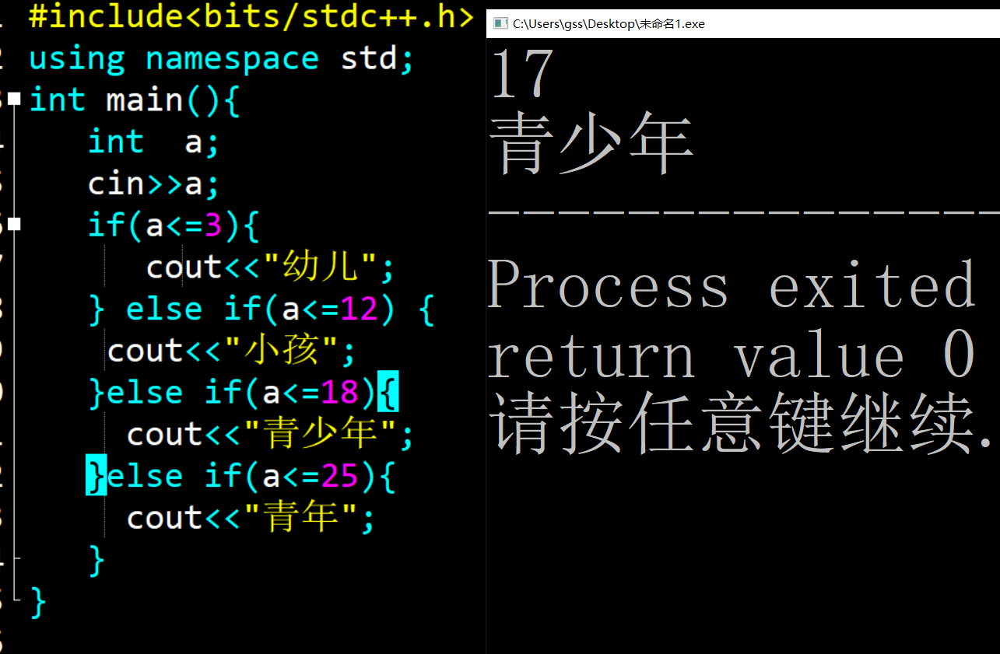
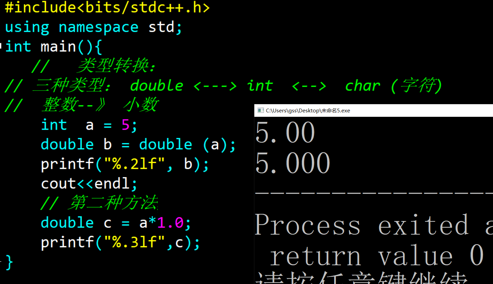
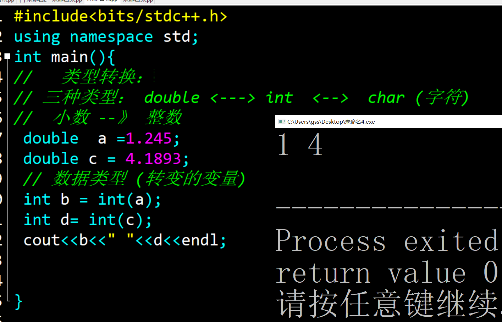
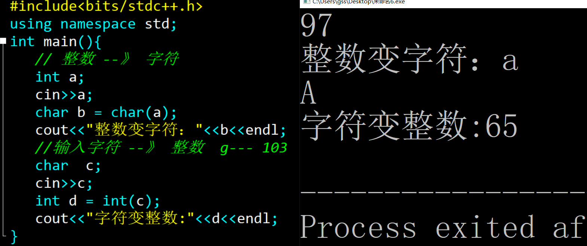
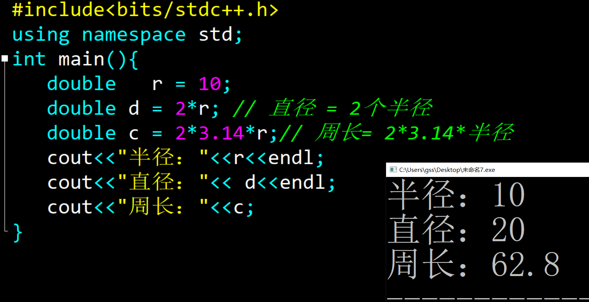
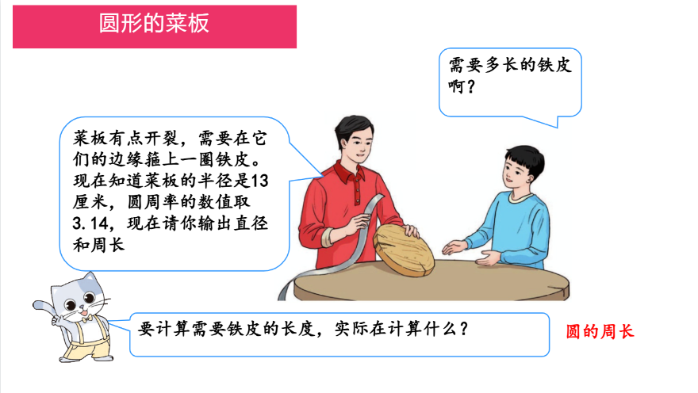
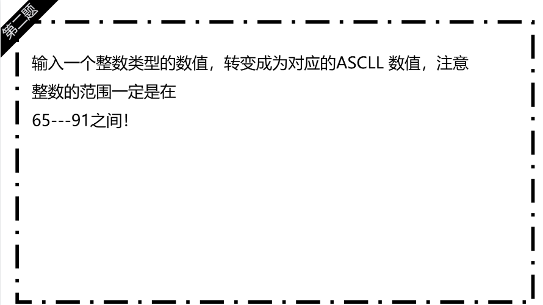
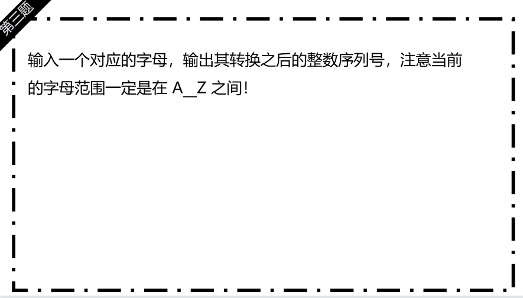

预科17课 转换的图形
知识点梳理内容
-
分支的选择区别：
1.单分支只有一种判断情况结果
2.双分支判断结果，有2种结果，正确或者错误 3.多分支判断的情况，很多种情况，根据需要选择期中的一种情况
-
多分支语句：
很多种情况，找出符合条件的一项
类比： 生活中的红绿灯
重点难点解析
-
语法格式 ：
if (条件1) {
// 条件1为真时执行
} else if (条件2) {
// 条件1为假且条件2为真时执行
} else {
// 上述条件均不满足时执行
}
-
特点：
特点：按顺序自上而下判断，一旦命中某个条件，
后续条件不再检查；else 可省略；可将多个条件合并为范围判断（如先判断高分段，再判断中分段，最后低分段）。 -
注意事项 ：
上面所有的情况都没有发生，结束程序
配套练习
- 基础语法练习1 ：年龄的判断
- 基础语法练习2 ：类型转换
- 综合练习3：圆形的面积和周长
📸 参考代码与练习说明
【题目】
输入一个整数n（保证范围在0到25之间），表示一个人的年龄。如果n在0∼3的范围内，输出" 幼儿"。如果n在4∼12的范围内，输出"小孩"。如果n在13∼18的范围内，输出"青少年"。如果n在19∼25的范围内，输出"青年"。
【思路】
1. 创造整数变量a ，输入数值；
2.多分支语句的选择 ，找出判断条件
3.根据情况，输出结果
【关键代码】 if --else if
【说明】输出的数值都是正确的

【题目】整数转变成为小数 ，创造一个整数进行数值存储，然后把整数类型转变成为小数，存储在一个新的变量
【思路】 int--- > double ；
【关键代码】 无
【说明】整数转变小数，2种不同的方法

【题目】小数转变成为整数，创造变量a进行数值的存储小数，然后修改后的数值存储在新变量之中 。
【思路】 小数转变成为整数，直接把对应的数值小数点后抹除
【关键代码】 无
【说明】小数转变整数，直接抹除数值！

【题目】整数变成字符类型和字符类型转变成为整数类型 。
【思路】 ASCII 的
【关键代码】 无
【说明】ASCII 数值转变，大写字母的A --> 65 ,小写字母a的ASCII 数值是 97
【拓展】
ASCII 概述 ：
ASCII（American Standard Code for Information Interchange，美国信息交换标准代码）是计算机领域最早、最基础的字符编码之一。

【题目】菜板都有点开裂，需要在它们的边缘箍上一圈铁皮。现在知道菜板的半径是13厘米，圆周率的数值取 3.14，现在请你输出直径和周长
【思路】 圆形的概念： 在同一平面内，到某一定点（圆心 O）的距离恒等于定长（半径 r）的所有点的集合称为圆（Circle）。
2. 直径与半径：d = 2r 直径 = 2 * 半径
3.周长与直径、半径：C = πd = 2πr，其中π（圆周率）
【关键代码】小数类型
【说明】 数学公示要牢记

作业练习
- 作业练习1 菜板的周长
- 作业练习2：字符的转变
- 作业练习3：字符的转变2


